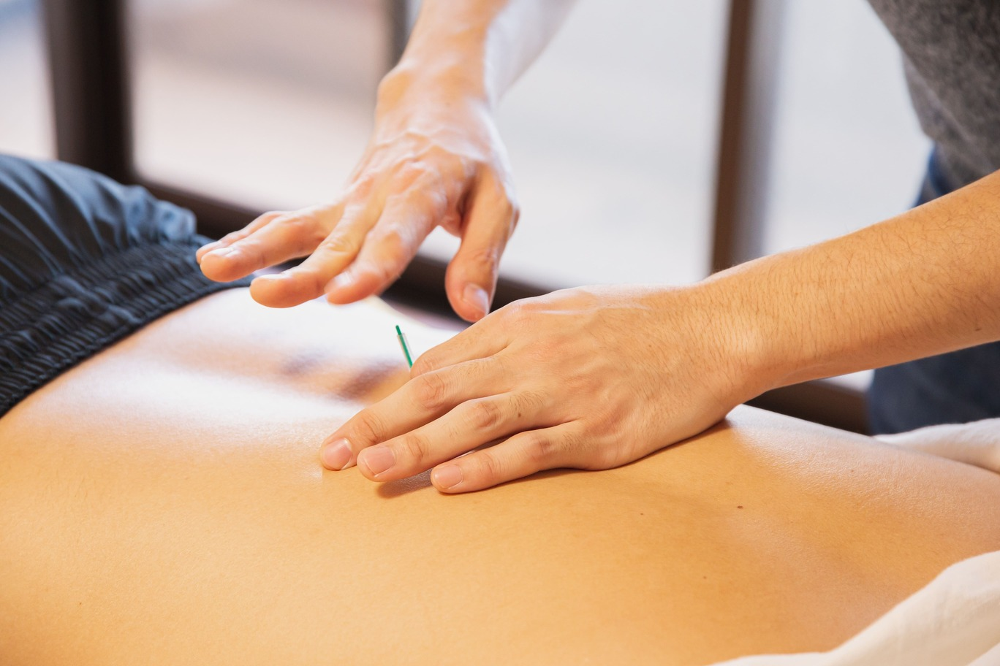

FISIOTERAPIA
Es la especialidad médica que evalúa, trata y estudia en el tiempo a pacientes con enfermedades del Sistema Neuro Musculo esquelético por dolor o limitación funcional, transitoria o permanente

Es la especialidad médica que evalúa, trata y estudia en el tiempo a pacientes con enfermedades del Sistema Neuro Musculo esquelético por dolor o limitación funcional, transitoria o permanente
Se trata de la fórmula más clásica y más practicada de la fisioterapia. Suele relacionarse con los masajes pero también engloba otras técnicas como las movilizaciones, manipulaciones, bombeos, etc. En muchos centros se recurre a maquinaria, aplicación de calor, etc. pero está demostrado que la terapia manual por parte de fisioterapeutas expertos es más eficaz.
El masaje produce una relajación de la musculatura (muy eficiente cuando existen contracturas), un aumento de la vasodilatación y circulación de la zona (útil para disminuir posibles inflamaciones y aliviar el dolor) y un aumento de la temperatura zonal que produce una mejoría inmediata del dolor.
La osteopatía es un conjunto de técnicas manuales encaminadas al tratamiento de dolores presentes en diferentes zonas del cuerpo mediante manipulaciones de las articulaciones.
Es imprescindible que estas técnicas las realice un fisioterapeuta titulado para que no se agraven los problemas al manipular las zonas aquejadas, y que no se produzcan lesiones por mala praxis.
Uso de agujas de acupuntura para el tratamiento de los dolores miofasciales en los puntos de gatillo. El miofascio es un tejido muy fino que recubre la musculatura y los órganos. Los fisioterapeutas entrenados en esta técnica aplican agujas y las giran para estirar o liberar tensión en puntos concretos, tratando así dolencias en músculos y vísceras relacionados.